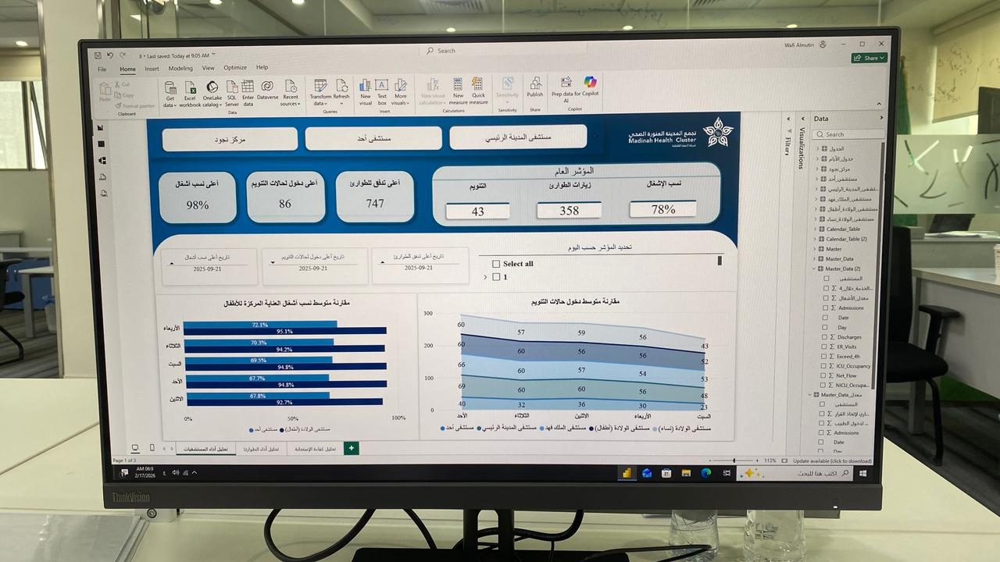
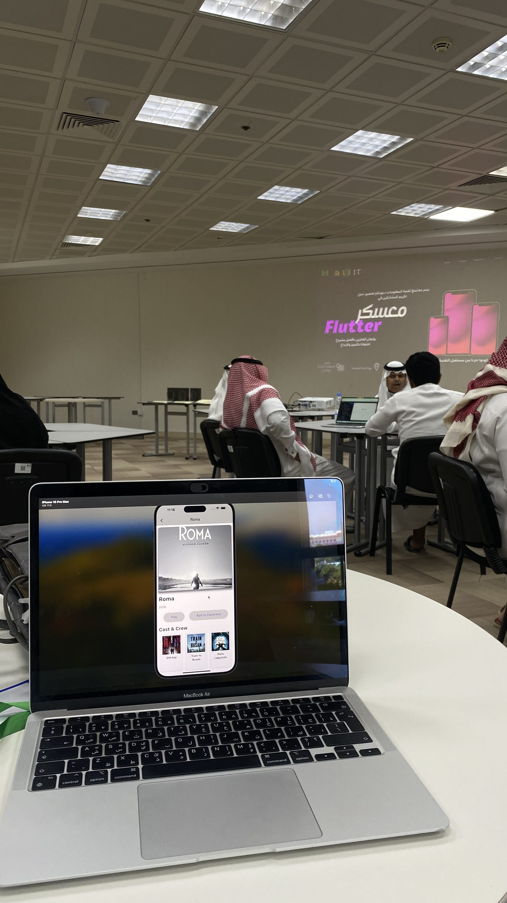
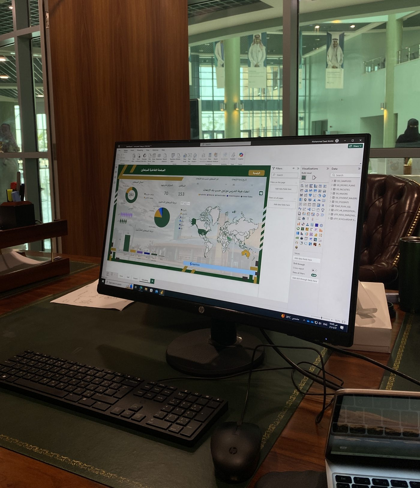
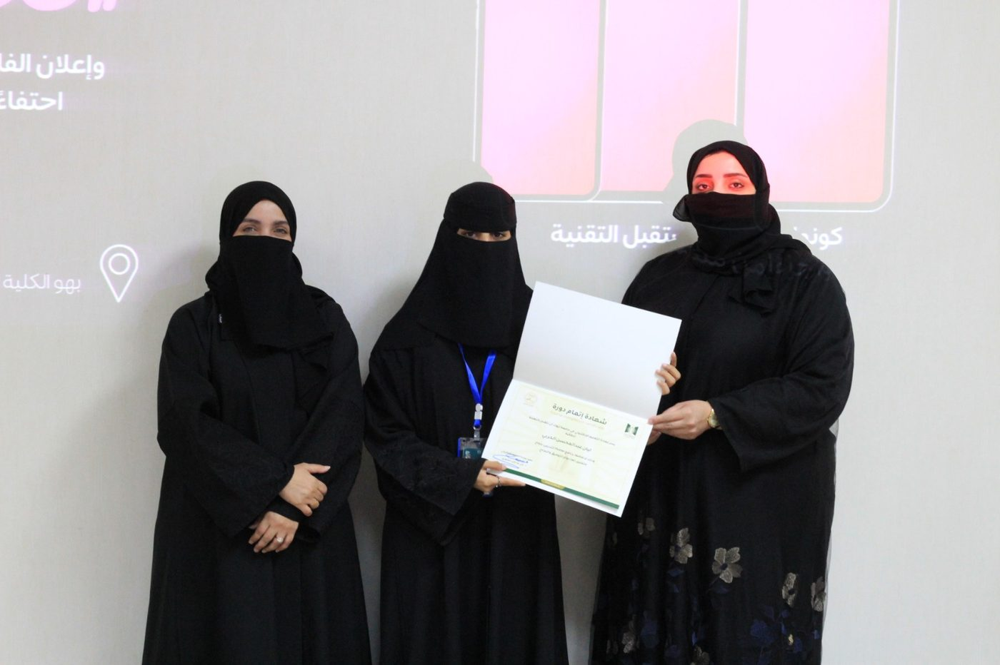

Turning Complex
Data into
Actionable Insights
Business Intelligence Analyst specializing in Power BI Dashboard Development, KPI Monitoring, Data Governance, and Operational Analytics across multiple domains — based in Saudi Arabia.

About Layan
Management Information Systems graduate from the University of Tabuk, with demonstrated expertise in Business Intelligence, healthcare analytics, and data governance. Skilled at transforming complex operational datasets into clear, executive-ready insights that drive strategic decision-making.
AboutAbout Layan
Management Information Systems graduate from the University of Tabuk, with demonstrated expertise in Business Intelligence, healthcare analytics, and data governance. Skilled at transforming complex operational datasets into clear, executive-ready insights that drive strategic decision-making.
Experienced in developing interactive Power BI dashboards, conducting KPI analysis, and identifying operational bottlenecks across healthcare environments — including Emergency Department performance analysis and workforce resource planning. Brings a strong foundation in data governance, validation, and quality assurance from hands-on internship experience.
Technical Skills
BI & Analytics
Healthcare
Governance
Tech Stack
Featured Projects
Healthcare Performance Analytics Dashboard
Power BI · RCC Reports · KPI Monitoring
Challenge
Emergency Department data from 500+ RCC reports needed structured analysis to evaluate departmental readiness for the winter season and identify gaps in capacity planning ahead of the seasonal demand surge.
Impact
Provided leadership with data-driven insights on ED capacity and departmental readiness, directly supporting the Winter Readiness Plan and enabling proactive resource planning.
Data Governance & Quality Improvement
SDAIA Standards · Oracle · Governance

Goal
Implement systematic practices to enhance institutional data consistency, accuracy, and compliance aligned with SDAIA data governance standards.
Solution
Developed interactive dashboards transforming raw Oracle DB data into visual insights, ensuring full alignment with SDAIA compliance requirements.
Mobile App UI — Flutter Camp
Flutter · Mobile Development · Dart

Context
As part of a hands-on Flutter development camp, built interactive mobile app screens for a movie-details experience — including info pages, cast & crew listings, and a favorites feature.
What Was Applied
Applied UI design principles and state management in Flutter, drawing on a data-analysis mindset to deliver a clearer, more structured user experience.
Work History
Project Management Specialist
Executive Administration for Healthcare Delivery · Saudi Arabia
Key Achievements
- /Analyzed 500+ RCC ED reports using Power BI for the Winter Readiness Plan.
- /Developed executive dashboards improving KPI visibility across departments.
Responsibilities
- /Conducted ED performance analysis to evaluate seasonal readiness.
Data Governance Intern
University of Tabuk — Data Governance Unit · Saudi Arabia
Key Achievements
- /Improved institutional data consistency and reporting accuracy.
Responsibilities
- /Supported governance initiatives and compliance monitoring.
Academic Background
Management Information Systems
University of Tabuk
Saudi Arabia · July 2020 – December 2024
Volunteering & Community

Ramadan Salam Initiative
Madinah Eye TeamVolunteered with the Madinah Eye Volunteer Team on the "Ramadan Salam" initiative — contributing to crowd organization, visitor safety, and guest services during the blessed month of Ramadan 1447H, over 6 days and 36 total volunteer hours, and was awarded the 2026 Excellence Medal in recognition of her contribution.

Course Completion Certificate
Took part in an academic training workshop held at the college, and received a certificate of completion in recognition of active participation.
Let's Connect
I am actively seeking opportunities in Business Intelligence, Healthcare Data Analytics, and Power BI development across Saudi Arabia.